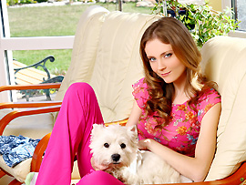
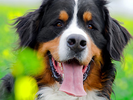
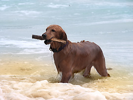
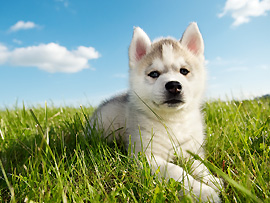

Nuestra Formacion
-

Socialización temprana
Los cachorros deben ser expuestos a diversas personas, animales y entornos para desarrollar confianza y adaptabilidad.
Esto ayuda a prevenir problemas de comportamiento en el futuro. -

Entrenamiento de obediencia
La enseñanza de comandos básicos como sentarse, quedarse quieto y venir cuando se les llama es fundamental para establecer una comunicación efectiva entre el cachorro y su nuevo dueño.
-

Higiene y cuidado
Los cachorros deben aprender hábitos de higiene adecuados, como usar el área designada para hacer sus necesidades y acostumbrarse a ser cepillados y bañados.
-

Socialización continua
El seguimiento y apoyo después de que los cachorros sean adoptados es esencial para asegurarse de que continúen socializando y se adapten bien a su entorno en curso. Esto puede incluir clases de entrenamiento adicionales o asesoramiento a los nuevos dueños.
FAQS
¿Qué cuidados y atención especial requieren los cachorros recién nacidos?Los cachorros recién nacidos necesitan cuidados constantes. Se les proporciona una dieta de leche materna durante las primeras semanas, seguida de una transición gradual a alimentos sólidos.
También se realizan controles veterinarios para asegurar su salud. El ambiente debe mantenerse cálido y limpio, y se fomenta la interacción con la madre y sus hermanos para la socialización. La atención temprana es esencial para su desarrollo saludable.
¿Cuál es el proceso de socialización que siguen los cachorros antes de ser adoptados?Nuestros cachorros se someten a un programa de socialización meticuloso. Se les expone a diversas situaciones, ruidos y personas para desarrollar confianza y adaptabilidad. Fomentamos interacciones positivas con otros animales y humanos.
También comenzamos el entrenamiento básico de obediencia. Esto prepara a los cachorros para una transición suave a sus nuevos hogares y ayuda a prevenir problemas de comportamiento.
¿Qué garantías o políticas de salud ofrecen para los cachorros que venden?Ofrecemos una garantía de salud que cubre enfermedades hereditarias graves durante un período específico después de la compra. Todos nuestros cachorros se entregan con vacunas y desparasitaciones al día, así como un registro de salud.
Recomendamos exámenes veterinarios posteriores para mantener la salud de los cachorros. Estamos comprometidos con la salud de nuestros cachorros y brindamos información sobre su cuidado continuo.
¿Ofrecen asesoramiento y apoyo después de que los cachorros son adoptados?Sí, proporcionamos asesoramiento y apoyo después de la adopción. Estamos disponibles para responder preguntas sobre cuidados, entrenamiento y problemas de comportamiento.
Ofrecemos recursos y recomendaciones para ayudar a los nuevos dueños a criar y cuidar a su cachorro de manera efectiva. Nuestro compromiso es garantizar que los cachorros y sus familias tengan una experiencia positiva y exitosa.